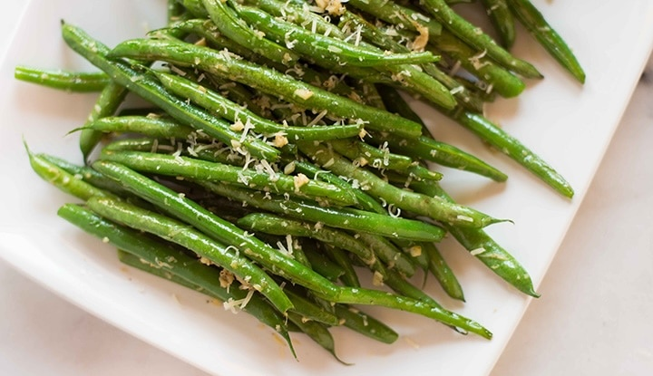

Roasted Garlic Parmesan Green Beans: A College Kitchen Revelation

In college, my relationship with vegetables was one of indifference. They seemed like obligatory sidekicks to the main dish. However, everything changed when I moved into my first apartment and realized that if I wanted to eat healthier, I had to learn to cook.
Vegetables, once relegated to a bland existence in my meals, became my canvas for culinary exploration. I started with something simple: green beans. As a beginner in the kitchen, roasting seemed like a safe bet.
With a bunch of fresh green beans, a drizzle of olive oil, and a sprinkle of garlic and Parmesan, I embarked on my veggie journey. As they roasted in the oven, the kitchen filled with a tantalizing aroma—the sizzle of oil, the earthiness of garlic, and the promise of something delicious.
When I finally pulled out the roasted green beans, they were a revelation. Tender yet crispy, each bite burst with flavor. It was a eureka moment—the realization that with a little love and attention, vegetables could be not just palatable but downright irresistible.
From that day forward, vegetables became my partners in culinary crime. They were no longer a boring necessity but the stars of my meals. And those roasted garlic Parmesan green beans? They were the catalyst for a newfound love affair with vegetables, proving that sometimes, all it takes is a little roasting to unlock a world of flavors.
Roasted Garlic Parmesan Green Beans
Ingredients:
- 1 pound fresh green beans, trimmed
- 2 tablespoons olive oil
- 3 cloves garlic, minced
- 1/4 cup grated Parmesan cheese
- Salt and pepper to taste
Instructions
- Preheat your oven to 425°F (220°C). Line a baking sheet with parchment paper or foil.
- In a bowl, toss the trimmed green beans with olive oil, minced garlic, Parmesan cheese, salt, and pepper until the beans are evenly coated.
- Spread the green beans in a single layer on the prepared baking sheet.
- Roast in the preheated oven for 15-20 minutes, or until the green beans are tender and slightly crispy on the edges, tossing halfway through cooking.
- Once done, sprinkle with additional Parmesan cheese if desired and serve hot.